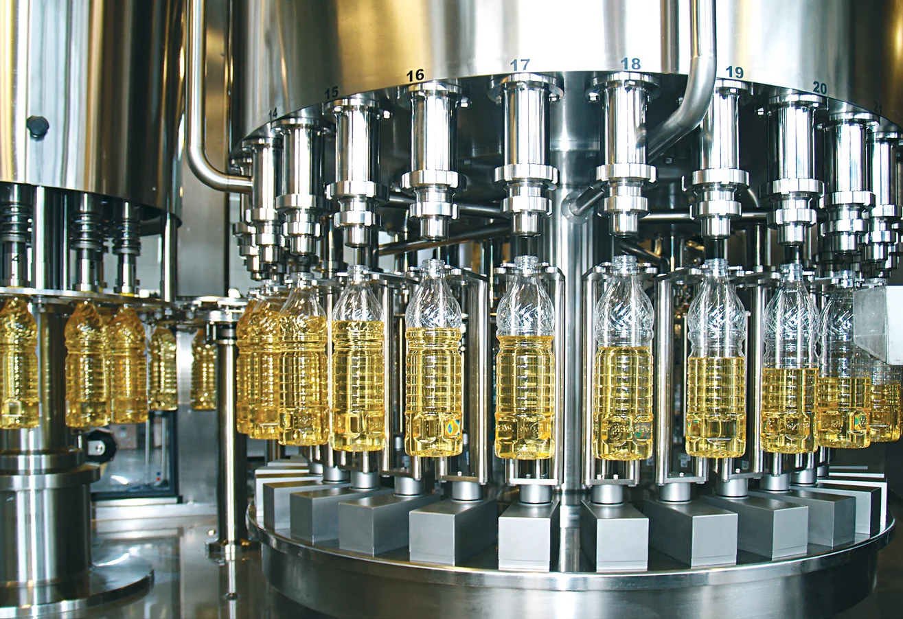

Азотирование масла без жидкого азота и сложной криогенной инфраструктуры
Удаляем растворённый кислород непосредственно в потоке и создаём инертную среду до укупорки. Компактное решение для действующих линий, ёмкостей хранения и транспортных контуров.
* Рабочий ориентир. Фактический расход зависит от продукта, производительности, режима обработки и параметров линии.
Две производственные задачи
Работаем не только с тарой. Работаем с самим маслом.
Кислород может попасть в продукт при хранении, перевозке и перекачке — задолго до горлышка бутылки. Поэтому защита начинается в потоке.
01
Качество продукта
Снижаем содержание растворённого кислорода
Мелкодисперсный азот создаёт большую площадь контакта с маслом. Растворённый O₂ переходит в газовую фазу и удаляется из продукта до розлива.
Снижение риска прогоркания
Поддержание вкуса, аромата и цвета
Окислительная стабильность партии
02
N₂газовая среда
Стабильность упаковки
Формируем инертную среду и внутреннее давление
После розлива азот заполняет свободное пространство над продуктом и помогает PET-бутылке сохранять форму при хранении и перевозке.
Инертная среда после укупорки
Снижение риска деформации PET
Устойчивость в логистическом цикле
Ключевое различие
Жидкий азот работает прежде всего с пространством в таре. UWIN начинает с кислорода внутри самого масла.
Два подхода к одной задаче
Сравнение по технологическому принципу, а не по рекламным обещаниям
Оба подхода могут создавать инертную среду и давление в таре. Разница — в точке воздействия, инфраструктуре и возможности работать с растворённым кислородом.
Дозирование в тару
LN₂−196 °C
VS
Обработка продукта
UWINN₂ GAS
O₂
Критерий
Дозирование жидкого азота в тару
UWIN: газообразный азот в потоке
Точка воздействия
Тара до или после наполнения
Сам поток масла до розлива или на другом участке контура
Растворённый в масле O₂
Удаление из объёма продукта не является основной функцией дозатора
Десорбция кислорода — основная технологическая функция
Инертная среда и тара
Создаёт газовую среду и давление в упаковке
Создаёт газовую среду и давление после обработки продукта
Дозирующая головка синхронизируется с форматом тары
Поточная или байпасная схема после аудита линии
Нужно сравнить варианты применительно к вашей линии?
Механизм технологии
Десорбция кислорода через интенсивный массообмен
Азот не вступает с кислородом в химическую реакцию. Он создаёт условия, при которых растворённый O₂ переходит из масла в газовую фазу и выводится из продукта.
01
Мелкодисперсная подача N₂
Газ распределяется в потоке множеством малых пузырьков.
02
Большая межфазная поверхность
Чем больше площадь контакта газа и масла, тем интенсивнее массообмен.
03
Переход и отвод O₂
Растворённый кислород переходит в пузырьки азота и удаляется с газовой фазой.
ПОТОК МАСЛАМАССООБМЕНСНИЖЕНИЕ O₂
N₂
N₂N₂
O₂O₂O₂
Продукт до обработкиO₂ ↓Продукт после обработки
Универсальность применения
Одна технология — на всём пути масла
UWIN не привязан только к горлышку бутылки. Точку подключения выбирают по задаче предприятия и текущему производственному контуру.
Компактная установка вместо отдельного криогенного хозяйства
Для стандартных объёмов достаточно баллона газообразного азота. На крупных производствах установка подключается к генератору N₂.
01Поточная интеграция
Точка подключения определяется после изучения линии.
02Байпасная схема
Можно включать обработку только для выбранного продукта.
03Баллон или генератор
Источник азота масштабируется вместе с объёмами.
04Без жидкого азота
Не нужны криососуды и вакуумно-изолированный тракт.
Эксплуатация
Источник азота под масштаб предприятия
Начните с доступной баллонной схемы. При росте объёмов подключите собственный генератор азота без смены технологического принципа.
Рабочий ориентирдо 200тонн масла на одном баллоне*
Ориентир заправки500–1500 ₽в зависимости от региона*
Для крупных объёмовN₂подключение генератора азота
* Показатели уточняются при аудите с учётом типа баллона, чистоты азота, продукта, производительности и режима обработки.
B2B-процесс
Сначала понимаем линию. Затем предлагаем решение.
Сайт не заменяет инженера и не выдаёт типовое обещание. Коммерческое предложение строится вокруг параметров конкретного производства.
01
Вводные данные
Продукт, производительность, формат тары и текущая задача.
02
Изучение линии
Разбираем существующий контур и при необходимости проводим аудит.
03
Схема интеграции
Определяем точку подключения, поточную или байпасную схему.
04
КП и расчёты
Формируем состав решения, расход азота и экономику проекта.
05
Решение заказчика
Передаём данные, достаточные для обоснованного выбора.
06
Запуск и сервис
Монтаж, пусконаладка, обучение и поддержка оборудования.

Проверяем на рабочем режимеИзмеримые показатели вместо общих отзывов
Проверка технологии
Что можно подтвердить во время теста
01
Растворённый кислород до и после обработки
02
Расход азота на тонну продукта
03
Стабильность режима на рабочей производительности
04
Давление и геометрия тары после укупорки
05
Показатели качества в согласованном цикле наблюдения
Компетенции группы UWIN
Инженерный сервис для линий розлива
Одна команда сопровождает проект от первичного аудита и схемы подключения до запуска, модернизации и сервисной поддержки.
01
Инженерная экспертиза
Анализ продукта, линии и производственного контура.
02
Монтаж и шеф-монтаж
Организация работ на действующем производстве.
03
Пусконаладка
Настройка рабочего режима и обучение персонала.
04
Гарантийный сервис
Поддержка оборудования после ввода в эксплуатацию.
05
Диагностика и ремонт
Восстановление и поддержание работоспособности.
06
Модернизация
Адаптация решения при изменении задач производства.
07
Системы маркировки
Интеграция оборудования в общий контур линии.
08
Индивидуальные решения
Проектирование нестандартной схемы под предприятие.
Следующий шаг
Рассчитаем схему азотирования под вашу линию
Передайте основные параметры. Мы изучим производственный контур, предложим точку подключения и подготовим инженерные вводные для коммерческого предложения.
Продукт · производительность · тара · текущая задача